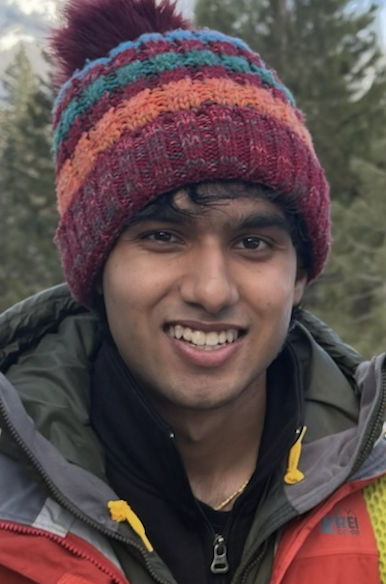

Me at Sequoia National Park
About Me
Hello! My name is Sidharth Sharma, but I mostly go by Sid. I am an undergraduate studying Electrical Engineering and Computer Science (EECS) and Engineering Physics (EP) at UC Berkeley. Currently, my interests are very broad; I think I am interested in almost every area of EECS.
At Berkeley, I have mainly worked at the Berkeley Wireless Research Center, where I work on Electronic Design Automation (EDA) tools and high performance computing. Lately, I've become more interested in CS theory.
Outside of academics, I'm interested in filmaking and cinematography, hiking, and reading up on history.